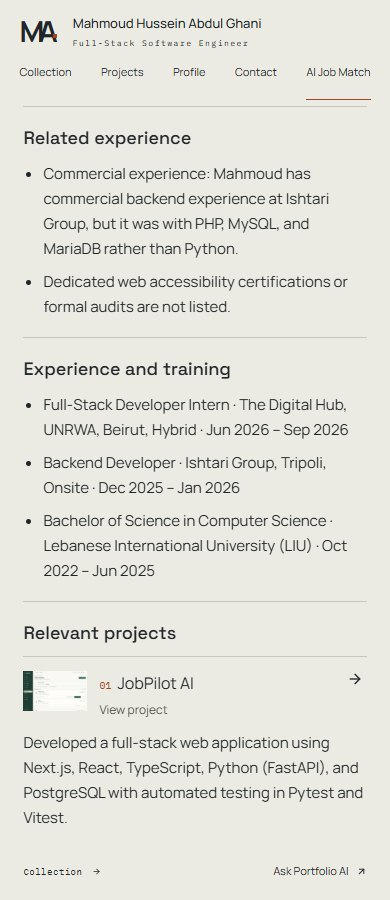
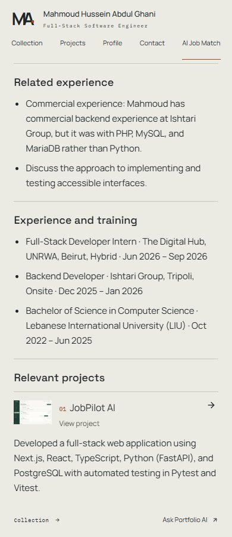
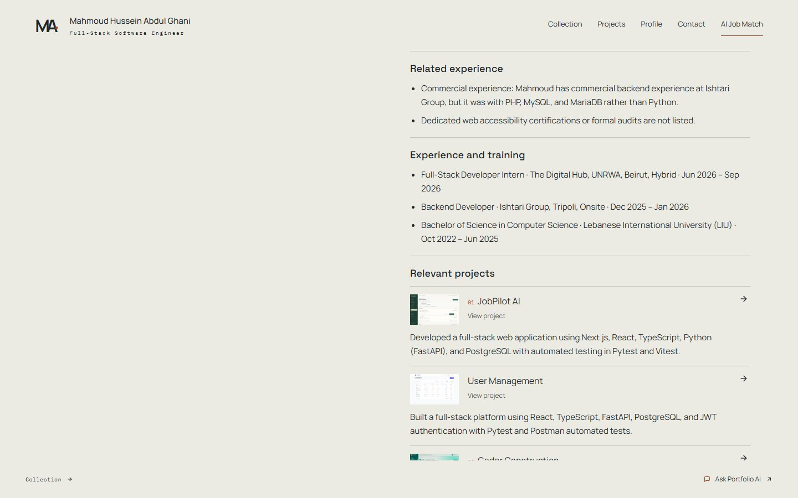
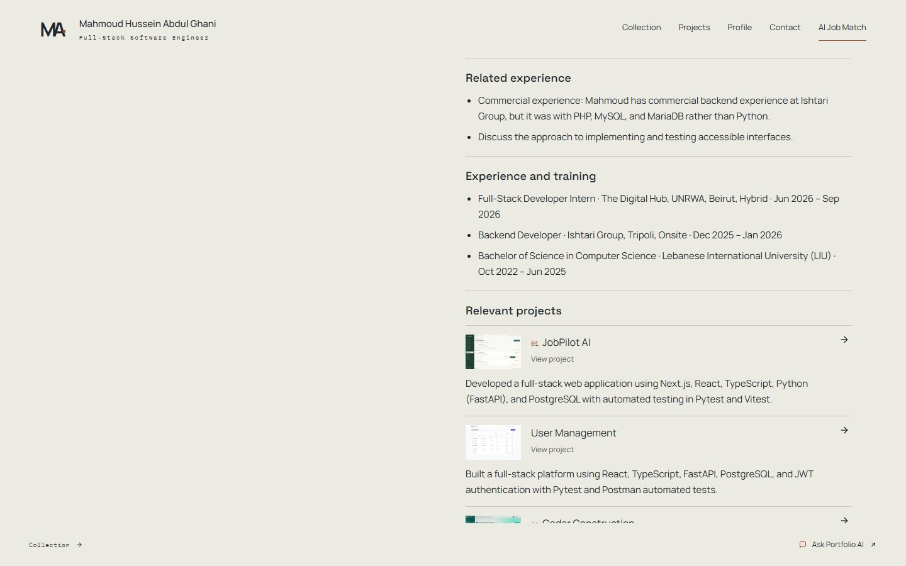
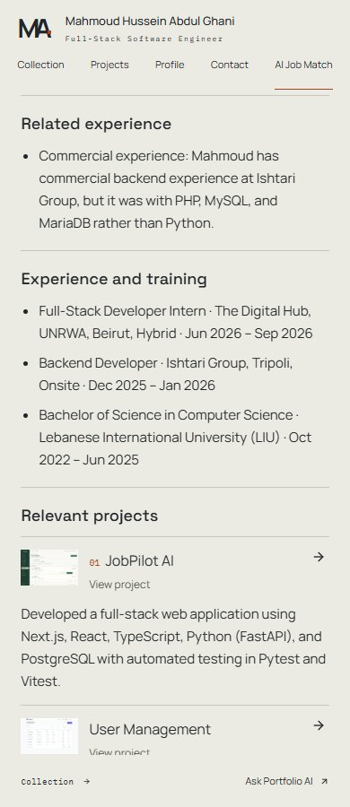
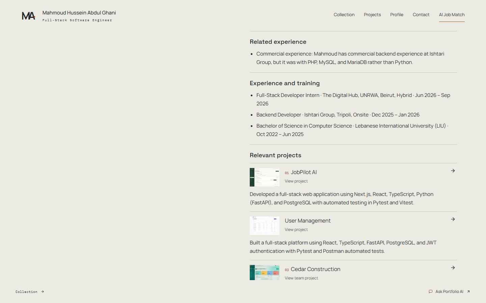

Controlled before/after fixture through PR49/current source formatters. The reported production sentence is inserted into the same report; this is not an archived production report or model A/B. Methods and validation.




Actual request results. Actual signed tailored-CV download.

